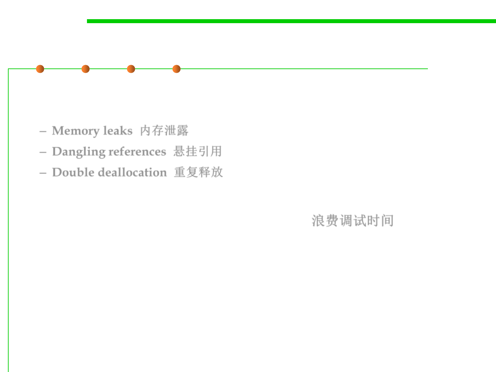

8.1 Metrics, Principles, and Methods of Construction for Performance
The REAL bad thing about explicit deallocation
▪ The problems are real and omnipresent in explicit deallocation
systems and they cause the real problem
– Memory leaks 内存泄露
– Dangling references 悬挂引用
– Double deallocation 重复释放
▪ Wasting huge amounts of debugging time! 浪费调试时间
▪ Despite this, programs may still fail in mysterious ways long after
being put into production.
▪ Finding and fixing MM bugs can account for 40% of debug time.